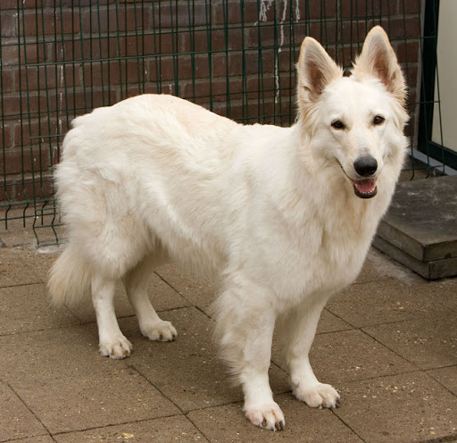

Zwitserse witte herder
De Zwitserse witte herder is een door de Fédération Cynologique Internationale erkend hondenras.
Geschiedenis
Deze zo wel langstok- en stokharige witte herdershond is een variant van de Duitse herder, maar de kleur was begin 20e eeuw in Europa ongewenst. In Amerika ontwikkelde de fokker Ann Tracy een bloedlijn met de huidige kenmerken van de witte herder. Het dier was daarom vroeger bekend onder de naam Amerikaans-Canadese witte herder.
De witte herder wordt in 1991 in Zwitserland erkend door en opgenomen als ras door de SKG (Zwitserse Kennel Club). In 1993 volgt de Raad van Beheer de SKG door de witte herder op te nemen in een voorlopig register. Per 1 januari 2003 erkent de FCI (Internationale Kynologen Federatie) de witte herder voorlopig als rashond. Op 4 juli 2011 volgt de definitieve erkenning onder de naam Berger Blanc Suisse (Zwitserse witte herder; BBS). In Nederland heeft de Raad van Beheer gekozen voor de Engelstalige benaming White Swiss Shepherd Dog.
Door zijn zachtaardigheid is hij een van de herderrassen die door de FCI niet tot een werkproef verplicht zijn.
Karakter
De Zwitserse witte herder is een sociale, vriendelijke hond. Het is een echte gezinshond, waarmee wel, zoals met elke herdershond, gewerkt moet worden. De rasstandaard zegt het volgende over het karakter: temperamentvol zonder nervositeit, opmerkzaam en waakzaam, soms enigszins gereserveerd tegenover vreemden, echter nooit angstig of agressief.
Het is een hond waarmee men in veel hondensporten kan meedoen. Zoals gehoorzaamheid, behendigheid, flyball en doggydance. Zoals bij alle snelgroeiende hondenrassen moet er in het eerste levensjaar van de hond extra voorzichtig worden gedaan om overbelasting van gewrichten te voorkomen. Snelle wendingen in het spel kunnen dan ook gedurende de snelle groeifase het beste worden vermeden.
bron: wikipedia.nl